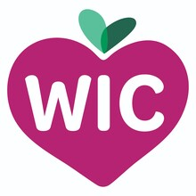
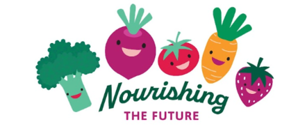
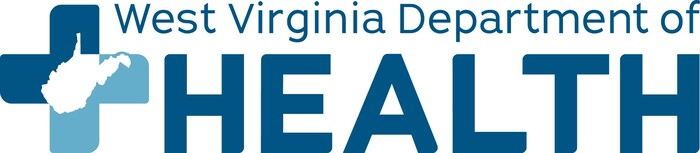

TTA routes & schedules
Review Huntington-area bus routes and schedules before your appointment.
View TTA routes ↗
Lily's Place + WICFamily Resource Hub • Huntington, West Virginia Apply for WICLily's Place + West Virginia WIC
Find food, shelter, health care, family support and transportation in Huntington — and connect directly with WIC when you're ready.
No sign-in required. This site does not collect medical or participant information.
What do you need today?


Huntington family resource map
Search by service, agency or address. Select a resource to see services, contact information and directions.
Resource locations are shown for navigation. Confirm current hours and service requirements with each organization.
Could WIC help your family?
WIC can provide nutritious foods, nutrition education, breastfeeding support and connections to other health and community services.
Use the WV WIC Eligibility Screener to answer a few quick questions and see if you may qualify for WIC benefits.
Check WIC Eligibility →Scan the QR code with your phone or select the button above. The screening tool provides an estimate of potential eligibility. Final WIC eligibility is determined by the WIC program.
Use the official WIC participant application. On a phone, use the button; on another device, you can scan the QR code.
Open WIC application ↗ Visit the West Virginia WIC website ↗Explore the West Virginia WIC Data Dashboard or the official WIC website for program information and statewide data.
Open WV WIC Data Dashboard ↗Getting there
Use the resource map for directions and connect with the Tri-State Transit Authority (TTA) for Huntington-area bus service.
Review Huntington-area bus routes and schedules before your appointment.
View TTA routes ↗TTA offers paratransit options for eligible riders who cannot use the fixed-route system.
Visit TTA ↗Call TTA for route and transportation information.
304-529-RIDE (7433)Lily's Place + WIC impact
This section uses aggregate WIC program data. Lily's Place events can be added monthly as Valley East/West mobile enrollment or pop-up clinic activity.
Huntington ZIP codes
Valley East/West
Monthly collaboration tracking
Add one aggregate row per month to data/lilys-impact.json. The site will calculate cumulative events, hours, referrals, applications and certifications automatically.
About this hub
This resource hub is designed for Lily's Place families and Huntington-area residents. It brings local resources, WIC access and transportation information into one place.
Organization hours, services and eligibility requirements can change. Confirm details directly with the organization before traveling.